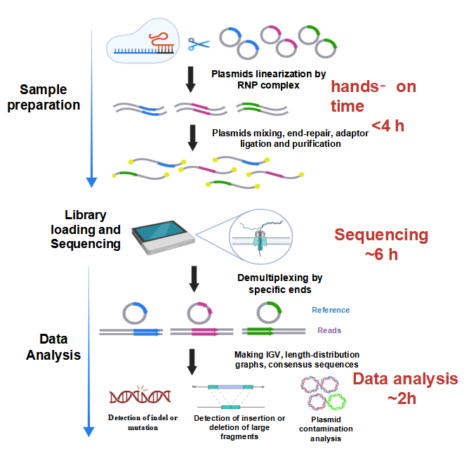

NPlasmid-seq Plasmid Quality Control and Contamination Detection Report
Ⅰ. Introduction
NPlasmid-seq is a fast, barcode-free workflow for plasmid QC. Plasmids are Cas9-linearized, pooled, and sequenced on ONT; reads are demultiplexed by plasmid-specific end-signatures instead of barcodes. This report summarizes per-plasmid quality control (QC) results generated by the NPlasmid-seq workflow. An index links to each sample, followed by standardized panels: read counts, IGV coverage views, length-distribution plots, BLAST-based consensus alignment, and contamination assessment. Together, these views let you quickly verify sequence integrity, inspect coverage and size profiles, confirm the polished consensus against its reference, and screen for cross-sample or external contaminants.
Ⅱ. Experimental Workflow

Ⅲ. Results Overview
Samples: P2202
Note: All plasmids’ names in the same run are shown here.
Ⅳ. Samples
P2202
1. Reads Number
| Sample No. | Read Count |
|---|---|
| P2202 | 1930 |
Note: the read count includes only reads with both ends intact.
2. IGV Visualization

IGV Visualization — Reads were aligned to the intended plasmid reference with minimap2 to generate a BAM file, which was loaded in IGV v2.19.2. The panel shows (i) a coverage track reporting per-position sequencing depth, and (ii) read-level alignments with base calls. Per-base color changes mark single-nucleotide substitutions; short insertions/deletions are rendered as small gaps or insertion markers within reads. Together, this view allows direct inspection of depth, large deletions/insertions, and small variants (SNVs/indels) along the entire plasmid.
3. Length Distribution

Length Distribution — Read-length histogram for the sample, with a vertical line at the expected plasmid size. A single dominant peak centered on the expected length indicates clean prep and successful linearization. A left or right shoulder implies fragmented molecules. Reported summary stats (median, IQR, % within ±10% of expected length) help quantify run quality and library integrity.
4. Consensus Sequence and Blast Result
Consensus: CnnuGTGAGCAAAAACAGGAAGGCAAAATGCCGCAAAAAAGGGAATAAGGGCGACACGGAAATGTTGAAT ACTCATACTCTTCCTTTTTCAATATTATTGAAGCATTTATCAGGGTTATTGTCTCATGAGCGGATACATA TTTGAATGTATTTAGAAAAATAAACAAATAGGGGTTCCGCGCACATTTCCCCGAAAAGTGCCACCTGACG TCTAAGAAACCATTATTATCATGACATTAACCTATAAAAATAGGCGTATCACGAGGCCCTTTCGTCTCGC GCGTTTCGGTGATGACGGTGAAAACCTCTGACACATGCAGCTCCCGGAGACGGTCACAGCTTGTCTGTAA GCGGATGCCGGGAGCAGACAAGCCCGTCAGGGCGCGTCAGCGGGTGTTGGCGGGTGTCGGGGCTGGCTTA ACTATGCGGCATCAGAGCAGATTGTACTGAGAGTGCACCATAAAATTGTAAACGTTAATATTTTGTTAAA ATTCGCGTTAAATTTTTGTTAAATCAGCTCATTTTTTAACCAATAGACCGAAATCGGCAAAATCCCTTAT AAATCAAAAGAATAGCCCGAGATAGAGTTGAGTGTTGTTCCAGTTTGGAACAAGAGTCCACTATTAAAGA ACGTGGACTCCAACGTCAAAGGGCGAAAAACCGTCTATCAGGGCGATGGCCCACTACGTGAACCATCACC CAAATCAAGTTTTTTGGGGTCGAGGTGCCGTAAAGCACTAAATCGGAACCCTAAAGGGAGCCCCCGATTT AGAGCTTGACGGGGAAAGCCGGCGAACGTGGCGAGAAAGGAAGGGAAGAAAGCGAAAGGAGCGGGCGCTA AGGCGCTGGCAAGTGTAGCGGTCACGCTGCGCGTAACCACCACACCCGCCGCGCTTAATGCGCCGCTACA GGGCGCGTACTATGGTTGCTTTGACGTATGCGGTGTGAAATACCGCACAGATGCGTAAGGAGAAAATACC GCATCAGGCGCCCCTGCAGGCAGCTGCGCGCTCGCTCGCTCACTGAGGCCGCCCGGGCAAAGCCCGGGCG TCGGGCGACCTTTGGTCGCCCGGCCTCAGTGAGCGAGCGAGCGCGCAGAGAGGGAGTGGCCAACTCCATC ACTAGGGGTTCCTGCGGCCGCTCGGTCCGCACGTGCCCCGAAAAGTGCCACCTGGTGGTGCAGATGAACT CCATGGGGTTCCCGCATAGCGGCTCACTCTTCCCTCTCTCCCCTCCCCTGCAGTTCGAGTATGGCGGCCA GGGCTCCGACCCTGCCGATGTGGCCATCCAGCTGACCTTCCTGCGCCTGATGTCCACCGAGGCCTCCCAG AACATCACCTACCACTGCAAGAACAGCGTGGCCTACATGGACCAGCAGACTGGCAACCTCAAGAAGGCCC TGCTCCTCCAGGGCTCCAACGAGATCGAGATCCGCGCCGAGGGCAACAGCCGCTTCACCTACAGCGTCAC TGTCGATGGCTGCACGGTGAGTGCCCAGAATCCCCAGGCAGGGCCCCACCTCTCCGGCCTTGGGCTTTTT GGCCAGGCCATAGTGCCCTCTCTCCATCACTCCCACGTGGTAATGCCCCCTCCCGTTGTCTCCACCCCAC CCCAGAGTCACACCGGAGCCTGGGGCAAGACAGTGATTGAATACAAAACCACCAAGACCTCCCGCCTGCC CATCATCGATGTGGCCCCCTTGGACGTTGGTGCCCCAGACCAGGAATTCGGCTTCGACGTTGGCCCTGTG GATCCGCCCAAAGGGAGATCCGACTCGTCTGAGGGCGAAGGCGAGACGCGGAAGAGGCCGCAGAGCCGGC AGCAGGCCGCGGGAAGGAAGGTCCGCTGGATTGAGGGCCGAAGGGACGTAGCAGAAGGACGTCCCGCGCA GAATCCAGGTGGCAACACGGGCGAGCAGCCATGGAAAGGACGTCAGCTTCCCCGACAACACCACGGAATT GTCAGTGCCCAACAGCCGAGCCCCTGTCCAGCAGCGGGCAAGGCAGGCGGCGATGAGTTCCGCCGTGGCA ATAGGGAGGGGGAAAGCGAAAGTCCCGGAAAGGAGCTGACAGGTGGTGGCAATGCCCCAACCAGTGGGGG TTGCGTCAGCAAACACAGTGCACACCACGCCACGTTGCCTGACAACGGGCCACAACTCCTCATAAAGAGA CAGCAACCAGGATTTATACAAGGAGGAGAAAATGAAAGCCATACGGGAAGCAATAGCATGATACAAAGGC ATTAAAGCAGCGTATCCACATAGCGTAAAAGGAGCAACATAGTTAAGAATACCAGTCAATCTTTCACAAA TTTTGTAATCCAGAGGTTGATTGTCGACGTTTAAACTTACTTGTACAGCTCGTCCATGCCCATCACATCG GTAAAGGCCTTTTGCCACTCCTTGAAGTTGAGCTCGGTCTTGGAGTGCTTGAGCTCCGTCTTACGGAACA CGTACATCGGCTGGTTCTTCAGATAGTTAGCCGCCATTGGCTTGGCAAAGGTGTAGGTGGTCCGCGCAGT GCTCCGGTAGCGCTTGCCATTTCCAGTGGTGTAACTCCACTTAAAGGTACTGATGATGGTTTTGTCGTTG GGGTAAGTCTTCTTCGACCTGCACCAGTCCGCAGCGGTCAGCGAGTTGGTCATCACAGGACCGTCAGCAG GGAAACCAGTCCCCTTCACCTGGGCCTCTCCTTTGATGTGGCTTCCCTCGTAGGTGTAGCGGTAGTTAAC AGTAAGGGAGGCACCATCTTCAAACTGCATTGTGCGATGGACTTGGTATCCGGAGCCATCTACCATGGCG GCCTGGAAAGGCGACATCCCGTCAGGGTAGGGCAGGTACTGATGGAAGCCATACCCGATATGAGGGACCA GAATCCAGGGGGAGAACTGGAGGTCACCCTTGGTGGACTTCAGGTTTAACTCCTCATAACCATCATTTGG ATTGCCGGTGCCCTGACCCACCATGTCAAAGTCCACACCGTTGATGGAGCCAAAGATGTGTAACTCATGT GTCGCTGGGAGAGAGGCCATGTTATCCTCCTCGCCCTTGCTCACCATCGGGCCAGGATTCTCCTCCACGT CGCCACAAGTCAGCAGAGATCCTCGGCCCTCGCCGCTGCCACGCGTAGGTCGAGTGAGCTGTGTGTAGAC GGGTTGTTCCCAGTGCTGGGGGCTGTGGGTCTGCGGGATGGAAGGGACCCCAGAGGTGTCGGCGATGGGG GTGTACATGGGGCGCTGAGCGGGGTTCATGTAGGTGAAGGTGGAGTAGAGGCCGGTGCCCTGGCCTGCCG CGTGGCTGTAGTAGGAGCTGGAGTTCTGGTGGTCGGTGTAGTCGTACTGTGAGCGGGTGATGGGCGGGTA GGAGGGGCTGTAGTGTGGGAGGTTGAAGGGGCTGTAGGCGATCTGTTGGGGCGAGTGCTGCTGCTGCTCG CTGTAGTGGCTGGGGCTCAGCTGCTCCGTCTTGATGTGCGTTCGCTGGGACTGGCCCGGCTCGCTGCTCA GCGTGGTCAGCGTGTGCGCCTGTGGCTGCTGCGGGGGTGCCGCCGGCTGCTGTGGGGGCTGCTGCGGGGG TGGCGGCGGCGCCTGCTGCTTGGACATCCACACGTGGCCCGCGCTCGCCGGGGTGGCCGCGGTGCTGCTG ATGCCGTAGCTGCCCGTGTAGGTGACCTGGCCGTGCGTGGCCGGCACCCCCGGGTGGCCGTTGGGCGGCA GGTACTGGTCAAACTCGTTGACATCGAAGGTCTCGATGTTGGAGATGACGTCGCTGCTCAGCTCGCCGAT GTCCACGTCGCGGAAGTCGATAGGGGGCTGTCTGCCCCCCTCTGGCAAGGGGCGCCCCTCTCGCTTCAGG TCAGCCTTGCCCGGCTGCACGTCGGTTTTGGGGGTGGTGGGTGGGGTCGGTGGGCCCTGGGATTGCCCCG AGTGCTCGCCGGGGGAGTGCACCTCGCTCATGCCGGAGGAGGAGTGTGGCGAGTCGGCCTGCAGCGCCTT GAAGATGGCGTTGGGGGAGATGTGCGTCTGCTCCGTGGCCTCCTCTGCCTCCGCCTGCCCGTTCTTCACC GACTTCCTCCGCCGCGGCTGGTACTTGTAATCCGGGTGGTCCTTCTTGTGCTGCACGCGCAGCCGCTCCG CCTCCTCCACGAAGGGCCGCTTCTCGCTCTCGTTCAGAAGTCTCCAGAGCTTGCCCAGCGTCTTGCTGAG CTCGGCGTTGTGCAAGTGCGGGTACTGGTCCGCGAGCTTCCTGCGCGCCGCCTGCGCCCACACCATGAAG GCGTTCATGGGCCGCTTGACGTGCGGCTTGTTCTTGCTGGAGCCGTTGACGCGCACCGGCATGGGCACCA GCGTCCAGTCGTAGCCTTTGAGCACCTGGCTGACCGCCTCGCGGATGCACACGGGGAACTTGTCCTCCTC GCTCTCCTTCTTCAGATCGGGCTCGCCCTTGGGGAACGTGTTCTCCTGGGGCCGCGTGTTCTCGGTGTCC GAGCCGGAGCCCGACGGGCAGGGCGAGCCCGCGGAGTCCTCGGACATGGTGGGGCTGGGGGCGCCGGACA GGCCCTTCTCCTGCTCGTCGGTCATCTTCATGAAGGGGTCCAGGAGATTCATGCTAGCGGGGCCAGGGTT TTCTTCGACGTCGCCGGCCTGTTTCAGCAGAGAGAAGTTTGTAGCGCCGGAGCCACTCCCTCCATCCCAA CCTGGCTCCCTCCCACCCAACCAACTTTCCCCCCAACCCGGAAACAGACAAGCAACCCAAACTGAACCCC CTCAAAAGCCAAAAAATGGGAGACAATTTCACATGGACTTTGGAAAATATTTTTTTCCTTTGCATTCATC TCTCAAACTTAGTTTTTATCTTTGACCAACCGAACATGACCAAAAACCAAAAGTGCATTCAACCTTACCA AAAAAAAAAAAAAAAAAAAAAAGAATAAATAAATAACTTTTTAAAAAAGGAAGCTTGGTCCACTTGCTTG AAGACCCATGCGGGGGTAAGTCCCTTTCTGCCCGTTGGGCTTATGAAACCCCAATGCTGCCCTTTCTGCT CCTTTCTCCACACCCCCCTTGGGGCCTCCCCTCCACTCCTTCCCAAATCTGTCTCCCCAGAAGACACAGG AAACAATGTATTGTCTGCCCAGCAATCAAAGGCAATGCTCAAACACCCAAGTGGCCCCCACCCTCAGCCC GCTCCTGCCCGCCCAGCACCCCCAGGCCCTGGGGGACCCCATGGAGTTCATCTGCACCACCTGTGTGAAA TTGTTATCCGCTCACGCGTGCGGCCGCAGGAACCCCTAGTGATGGAGTTGGCCACTCCCTCTCTGCGCGC TCGCTCGCTCACTGAGGCCGGGCGACCAAAGGTCGCCCGACGCCCGGGCGGCCTCAGTGAGCGAGCGAGC GCGCAGCTGCCTGCAGGACATGTGAGCAAAAGGCCAGCAAAAGGCCAGGAACCGTAAAAAGGCCGCGTTG CTGGCGTTTTTCCATAGGCTCCGCCCCCCTGACGAGCATCACAAAAATCGACGCTCAAGTCAGAGGTGGC GAAACCCGACAGGACTATAAAGATACCAGGCGTTTCCCCCTGGAAGCTCCCTCGTGCGCTCTCCTGTTCC GACCCTGCCGCTTACCGGATACCTGTCCGCCTTTCTCCCTTCGGGAAGCGTGGCGCTTTCTCATAGCTCA CGCTGTAGGTATCTCAGTTCGGTGTAGGTCGTTCGCTCCAAGCTGGGCTGTGTGCACGAACCCCCCGTTC AGCCCGACCGCTGCGCCTTATCCGGTAACTATCGTCTTGAGTCCAACCCGGTAAGACACGACTTATCGCC ACTGGCAGCAGCCACTGGTAACAGGATTAGCAGAGCGAGGTATGTAGGCGGTGCTACAGAGTTCTTGAAG TGGTGGCCTAACTACGGCTACACTAGAAGAACAGTATTTGGTATCTGCGCTCTGCTGAAGCCAGTTACCT TCGGAAAAAGAGTTGGTAGCTCTTGATCCGGCAAACAAACCACCGCTGGTAGCGGTGGTTTTTTTGTTTG CAAGCAGCAGATTACGCGCAGAAAAAAAGGATCTCAAGAAGATCCTTTGATCTTTTCTACGGGGTCTGAC GCTCAGTGGAACGAAAACTCACGTTAAGGGATTTTGGTCATGAGATTATCAAAAAGGATCTTCACCTAGA TCCTTTTAAATTAAAAATGAAGTTTTAAATCAATCTAAAGTATATATGAGTAAACTTGGTCTGACAGTTA CCAATGCTTAATCAGTGAGGCACCTATCTCAGCGATCTGTCTATTTCGTTCATCCATAGTTGCCTGACTC CCCGTCGTGTAGATAACTACGATACGGGAGGGCTTACCATCTGGCCCCAGTGCTGCAATGATACCGCGAG ACCCACGCTCACCGGCTCCAGATTTATCAGCAATAAACCAGCCAGCCGGAAGGGCCGAGCGCAGAAGTGG TCCTGCAACTTTATCCGCCTCCATCCAGTCTATTAATTGTTGCCGGGAAGCTAGAGTAAGTAGTTCGCCA GTTAATAGTTTGCGCAACGTTGTTGCCATTGCTACAGGCATCGTGGTGTCACGCTCGTCGTTTGGTATGG CTTCATTCAGCTCCGGTTCCCAACGATCAAGGCGAGTTACATGATCCCCCATGTTGTGCAAAAAAGCGGT TAGCTCCTTCGGTCCTCCGATCGTTGTCAGAAGTAAGTTGGCCGCAGTGTTATCACTCATGGTTATGGCA GCACTGCATAATTCTCTTACTGTCATGCCATCCGTAAGATGCTTTTCTGTGACTGGTGAGTACTCAACCA AGTCATTCTGAGAATAGTGTATGCGGCGACCGAGTTGCTCTTGCCCGGCGTCAATACGGGATAATACCGC GCCACATAGCAGAACTTTAAAAGTGCTCATCATTGGAAAACGTTCTTCGGGGCGAAAACTCTCAAGGATC TTACCGCTGTTGAGATCCAGTTCGATGTAACCCACTCGTGCACCCAACTGATCTTCAGCATCTTTTACTT TCAAG
BLASTN 2.9.0+
P2202
BLASTN 2.9.0+
Score = 12857 bits (6962), Expect = 0.0
Identities = 6970/6973 (99%), Gaps = 3/6973 (0%)
Strand=Plus/Plus
Sbjct 29 AAATGCCGCAAAAAAGGGAATAAGGGCGACACGGAAATGTTGAATACTCATACTCTTCCT 88
||||||||||||||||||||||||||||||||||||||||||||||||||||||||||||
Query 1 AAATGCCGCAAAAAAGGGAATAAGGGCGACACGGAAATGTTGAATACTCATACTCTTCCT 60
Sbjct 89 TTTTCAATATTATTGAAGCATTTATCAGGGTTATTGTCTCATGAGCGGATACATATTTGA 148
||||||||||||||||||||||||||||||||||||||||||||||||||||||||||||
Query 61 TTTTCAATATTATTGAAGCATTTATCAGGGTTATTGTCTCATGAGCGGATACATATTTGA 120
Sbjct 149 ATGTATTTAGAAAAATAAACAAATAGGGGTTCCGCGCACATTTCCCCGAAAAGTGCCACC 208
||||||||||||||||||||||||||||||||||||||||||||||||||||||||||||
Query 121 ATGTATTTAGAAAAATAAACAAATAGGGGTTCCGCGCACATTTCCCCGAAAAGTGCCACC 180
Sbjct 209 TGACGTCTAAGAAACCATTATTATCATGACATTAACCTATAAAAATAGGCGTATCACGAG 268
||||||||||||||||||||||||||||||||||||||||||||||||||||||||||||
Query 181 TGACGTCTAAGAAACCATTATTATCATGACATTAACCTATAAAAATAGGCGTATCACGAG 240
Sbjct 269 GCCCTTTCGTCTCGCGCGTTTCGGTGATGACGGTGAAAACCTCTGACACATGCAGCTCCC 328
||||||||||||||||||||||||||||||||||||||||||||||||||||||||||||
Query 241 GCCCTTTCGTCTCGCGCGTTTCGGTGATGACGGTGAAAACCTCTGACACATGCAGCTCCC 300
Sbjct 329 GGAGACGGTCACAGCTTGTCTGTAAGCGGATGCCGGGAGCAGACAAGCCCGTCAGGGCGC 388
||||||||||||||||||||||||||||||||||||||||||||||||||||||||||||
Query 301 GGAGACGGTCACAGCTTGTCTGTAAGCGGATGCCGGGAGCAGACAAGCCCGTCAGGGCGC 360
Sbjct 389 GTCAGCGGGTGTTGGCGGGTGTCGGGGCTGGCTTAACTATGCGGCATCAGAGCAGATTGT 448
||||||||||||||||||||||||||||||||||||||||||||||||||||||||||||
Query 361 GTCAGCGGGTGTTGGCGGGTGTCGGGGCTGGCTTAACTATGCGGCATCAGAGCAGATTGT 420
Sbjct 449 ACTGAGAGTGCACCATAAAATTGTAAACGTTAATATTTTGTTAAAATTCGCGTTAAATTT 508
||||||||||||||||||||||||||||||||||||||||||||||||||||||||||||
Query 421 ACTGAGAGTGCACCATAAAATTGTAAACGTTAATATTTTGTTAAAATTCGCGTTAAATTT 480
Sbjct 509 TTGTTAAATCAGCTCATTTTTTAACCAATAGACCGAAATCGGCAAAATCCCTTATAAATC 568
||||||||||||||||||||||||||||||||||||||||||||||||||||||||||||
Query 481 TTGTTAAATCAGCTCATTTTTTAACCAATAGACCGAAATCGGCAAAATCCCTTATAAATC 540
Sbjct 569 AAAAGAATAGCCCGAGATAGAGTTGAGTGTTGTTCCAGTTTGGAACAAGAGTCCACTATT 628
||||||||||||||||||||||||||||||||||||||||||||||||||||||||||||
Query 541 AAAAGAATAGCCCGAGATAGAGTTGAGTGTTGTTCCAGTTTGGAACAAGAGTCCACTATT 600
Sbjct 629 AAAGAACGTGGACTCCAACGTCAAAGGGCGAAAAACCGTCTATCAGGGCGATGGCCCACT 688
||||||||||||||||||||||||||||||||||||||||||||||||||||||||||||
Query 601 AAAGAACGTGGACTCCAACGTCAAAGGGCGAAAAACCGTCTATCAGGGCGATGGCCCACT 660
Sbjct 689 ACGTGAACCATCACCCAAATCAAGTTTTTTGGGGTCGAGGTGCCGTAAAGCACTAAATCG 748
||||||||||||||||||||||||||||||||||||||||||||||||||||||||||||
Query 661 ACGTGAACCATCACCCAAATCAAGTTTTTTGGGGTCGAGGTGCCGTAAAGCACTAAATCG 720
Sbjct 749 GAACCCTAAAGGGAGCCCCCGATTTAGAGCTTGACGGGGAAAGCCGGCGAACGTGGCGAG 808
||||||||||||||||||||||||||||||||||||||||||||||||||||||||||||
Query 721 GAACCCTAAAGGGAGCCCCCGATTTAGAGCTTGACGGGGAAAGCCGGCGAACGTGGCGAG 780
Sbjct 809 AAAGGAAGGGAAGAAAGCGAAAGGAGCGGGCGCTAAGGCGCTGGCAAGTGTAGCGGTCAC 868
||||||||||||||||||||||||||||||||||||||||||||||||||||||||||||
Query 781 AAAGGAAGGGAAGAAAGCGAAAGGAGCGGGCGCTAAGGCGCTGGCAAGTGTAGCGGTCAC 840
Sbjct 869 GCTGCGCGTAACCACCACACCCGCCGCGCTTAATGCGCCGCTACAGGGCGCGTACTATGG 928
||||||||||||||||||||||||||||||||||||||||||||||||||||||||||||
Query 841 GCTGCGCGTAACCACCACACCCGCCGCGCTTAATGCGCCGCTACAGGGCGCGTACTATGG 900
Sbjct 929 TTGCTTTGACGTATGCGGTGTGAAATACCGCACAGATGCGTAAGGAGAAAATACCGCATC 988
||||||||||||||||||||||||||||||||||||||||||||||||||||||||||||
Query 901 TTGCTTTGACGTATGCGGTGTGAAATACCGCACAGATGCGTAAGGAGAAAATACCGCATC 960
Sbjct 989 AGGCGCCCCTGCAGGCAGCTGCGCGCTCGCTCGCTCACTGAGGCCGCCCGGGCAAAGCCC 1048
||||||||||||||||||||||||||||||||||||||||||||||||||||||||||||
Query 961 AGGCGCCCCTGCAGGCAGCTGCGCGCTCGCTCGCTCACTGAGGCCGCCCGGGCAAAGCCC 1020
Sbjct 1049 GGGCGTCGGGCGACCTTTGGTCGCCCGGCCTCAGTGAGCGAGCGAGCGCGCAGAGAGGGA 1108
||||||||||||||||||||||||||||||||||||||||||||||||||||||||||||
Query 1021 GGGCGTCGGGCGACCTTTGGTCGCCCGGCCTCAGTGAGCGAGCGAGCGCGCAGAGAGGGA 1080
Sbjct 1109 GTGGCCAACTCCATCACTAGGGGTTCCTGCGGCCGCTCGGTCCGCACGTGCCCCGAAAAG 1168
||||||||||||||||||||||||||||||||||||||||||||||||||||||||||||
Query 1081 GTGGCCAACTCCATCACTAGGGGTTCCTGCGGCCGCTCGGTCCGCACGTGCCCCGAAAAG 1140
Sbjct 1169 TGCCACCTGGTGGTGCAGATGAACTCCATGGGGTTCCCGCATAGCGGCTCACTCTTCCCT 1228
||||||||||||||||||||||||||||||||||||||||||||||||||||||||||||
Query 1141 TGCCACCTGGTGGTGCAGATGAACTCCATGGGGTTCCCGCATAGCGGCTCACTCTTCCCT 1200
Sbjct 1229 CTCTCCCCTCCCCTGCAGTTCGAGTATGGCGGCCAGGGCTCCGACCCTGCCGATGTGGCC 1288
||||||||||||||||||||||||||||||||||||||||||||||||||||||||||||
Query 1201 CTCTCCCCTCCCCTGCAGTTCGAGTATGGCGGCCAGGGCTCCGACCCTGCCGATGTGGCC 1260
Sbjct 1289 ATCCAGCTGACCTTCCTGCGCCTGATGTCCACCGAGGCCTCCCAGAACATCACCTACCAC 1348
||||||||||||||||||||||||||||||||||||||||||||||||||||||||||||
Query 1261 ATCCAGCTGACCTTCCTGCGCCTGATGTCCACCGAGGCCTCCCAGAACATCACCTACCAC 1320
Sbjct 1349 TGCAAGAACAGCGTGGCCTACATGGACCAGCAGACTGGCAACCTCAAGAAGGCCCTGCTC 1408
||||||||||||||||||||||||||||||||||||||||||||||||||||||||||||
Query 1321 TGCAAGAACAGCGTGGCCTACATGGACCAGCAGACTGGCAACCTCAAGAAGGCCCTGCTC 1380
Sbjct 1409 CTCCAGGGCTCCAACGAGATCGAGATCCGCGCCGAGGGCAACAGCCGCTTCACCTACAGC 1468
||||||||||||||||||||||||||||||||||||||||||||||||||||||||||||
Query 1381 CTCCAGGGCTCCAACGAGATCGAGATCCGCGCCGAGGGCAACAGCCGCTTCACCTACAGC 1440
Sbjct 1469 GTCACTGTCGATGGCTGCACGGTGAGTGCCCAGAATCCCCAGGCAGGGCCCCACCTCTCC 1528
||||||||||||||||||||||||||||||||||||||||||||||||||||||||||||
Query 1441 GTCACTGTCGATGGCTGCACGGTGAGTGCCCAGAATCCCCAGGCAGGGCCCCACCTCTCC 1500
Sbjct 1529 GGCCTTGGGCTTTTTGGCCAGGCCATAGTGCCCTCTCTCCATCACTCCCACGTGGTAATG 1588
||||||||||||||||||||||||||||||||||||||||||||||||||||||||||||
Query 1501 GGCCTTGGGCTTTTTGGCCAGGCCATAGTGCCCTCTCTCCATCACTCCCACGTGGTAATG 1560
Sbjct 1589 CCCCCTCCCGTTGTCTCCACCCCACCCCAGAGTCACACCGGAGCCTGGGGCAAGACAGTG 1648
||||||||||||||||||||||||||||||||||||||||||||||||||||||||||||
Query 1561 CCCCCTCCCGTTGTCTCCACCCCACCCCAGAGTCACACCGGAGCCTGGGGCAAGACAGTG 1620
Sbjct 1649 ATTGAATACAAAACCACCAAGACCTCCCGCCTGCCCATCATCGATGTGGCCCCCTTGGAC 1708
||||||||||||||||||||||||||||||||||||||||||||||||||||||||||||
Query 1621 ATTGAATACAAAACCACCAAGACCTCCCGCCTGCCCATCATCGATGTGGCCCCCTTGGAC 1680
Sbjct 1709 GTTGGTGCCCCAGACCAGGAATTCGGCTTCGACGTTGGCCCTGTGGATCCGCCCAAAGGG 1768
||||||||||||||||||||||||||||||||||||||||||||||||||||||||||||
Query 1681 GTTGGTGCCCCAGACCAGGAATTCGGCTTCGACGTTGGCCCTGTGGATCCGCCCAAAGGG 1740
Sbjct 1769 AGATCCGACTCGTCTGAGGGCGAAGGCGAGACGCGGAAGAGGCCGCAGAGCCGGCAGCAG 1828
||||||||||||||||||||||||||||||||||||||||||||||||||||||||||||
Query 1741 AGATCCGACTCGTCTGAGGGCGAAGGCGAGACGCGGAAGAGGCCGCAGAGCCGGCAGCAG 1800
Sbjct 1829 GCCGCGGGAAGGAAGGTCCGCTGGATTGAGGGCCGAAGGGACGTAGCAGAAGGACGTCCC 1888
||||||||||||||||||||||||||||||||||||||||||||||||||||||||||||
Query 1801 GCCGCGGGAAGGAAGGTCCGCTGGATTGAGGGCCGAAGGGACGTAGCAGAAGGACGTCCC 1860
Sbjct 1889 GCGCAGAATCCAGGTGGCAACACGGGCGAGCAGCCATGGAAAGGACGTCAGCTTCCCCGA 1948
||||||||||||||||||||||||||||||||||||||||||||||||||||||||||||
Query 1861 GCGCAGAATCCAGGTGGCAACACGGGCGAGCAGCCATGGAAAGGACGTCAGCTTCCCCGA 1920
Sbjct 1949 CAACACCACGGAATTGTCAGTGCCCAACAGCCGAGCCCCTGTCCAGCAGCGGGCAAGGCA 2008
||||||||||||||||||||||||||||||||||||||||||||||||||||||||||||
Query 1921 CAACACCACGGAATTGTCAGTGCCCAACAGCCGAGCCCCTGTCCAGCAGCGGGCAAGGCA 1980
Sbjct 2009 GGCGGCGATGAGTTCCGCCGTGGCAATAGGGAGGGGGAAAGCGAAAGTCCCGGAAAGGAG 2068
||||||||||||||||||||||||||||||||||||||||||||||||||||||||||||
Query 1981 GGCGGCGATGAGTTCCGCCGTGGCAATAGGGAGGGGGAAAGCGAAAGTCCCGGAAAGGAG 2040
Sbjct 2069 CTGACAGGTGGTGGCAATGCCCCAACCAGTGGGGGTTGCGTCAGCAAACACAGTGCACAC 2128
||||||||||||||||||||||||||||||||||||||||||||||||||||||||||||
Query 2041 CTGACAGGTGGTGGCAATGCCCCAACCAGTGGGGGTTGCGTCAGCAAACACAGTGCACAC 2100
Sbjct 2129 CACGCCACGTTGCCTGACAACGGGCCACAACTCCTCATAAAGAGACAGCAACCAGGATTT 2188
||||||||||||||||||||||||||||||||||||||||||||||||||||||||||||
Query 2101 CACGCCACGTTGCCTGACAACGGGCCACAACTCCTCATAAAGAGACAGCAACCAGGATTT 2160
Sbjct 2189 ATACAAGGAGGAGAAAATGAAAGCCATACGGGAAGCAATAGCATGATACAAAGGCATTAA 2248
||||||||||||||||||||||||||||||||||||||||||||||||||||||||||||
Query 2161 ATACAAGGAGGAGAAAATGAAAGCCATACGGGAAGCAATAGCATGATACAAAGGCATTAA 2220
Sbjct 2249 AGCAGCGTATCCACATAGCGTAAAAGGAGCAACATAGTTAAGAATACCAGTCAATCTTTC 2308
||||||||||||||||||||||||||||||||||||||||||||||||||||||||||||
Query 2221 AGCAGCGTATCCACATAGCGTAAAAGGAGCAACATAGTTAAGAATACCAGTCAATCTTTC 2280
Sbjct 2309 ACAAATTTTGTAATCCAGAGGTTGATTGTCGACGTTTAAACTTACTTGTACAGCTCGTCC 2368
||||||||||||||||||||||||||||||||||||||||||||||||||||||||||||
Query 2281 ACAAATTTTGTAATCCAGAGGTTGATTGTCGACGTTTAAACTTACTTGTACAGCTCGTCC 2340
Sbjct 2369 ATGCCCATCACATCGGTAAAGGCCTTTTGCCACTCCTTGAAGTTGAGCTCGGTCTTGGAG 2428
||||||||||||||||||||||||||||||||||||||||||||||||||||||||||||
Query 2341 ATGCCCATCACATCGGTAAAGGCCTTTTGCCACTCCTTGAAGTTGAGCTCGGTCTTGGAG 2400
Sbjct 2429 TGCTTGAGCTCCGTCTTACGGAACACGTACATCGGCTGGTTCTTCAGATAGTTAGCCGCC 2488
||||||||||||||||||||||||||||||||||||||||||||||||||||||||||||
Query 2401 TGCTTGAGCTCCGTCTTACGGAACACGTACATCGGCTGGTTCTTCAGATAGTTAGCCGCC 2460
Sbjct 2489 ATTGGCTTGGCAAAGGTGTAGGTGGTCCGCGCAGTGCTCCGGTAGCGCTTGCCATTTCCA 2548
||||||||||||||||||||||||||||||||||||||||||||||||||||||||||||
Query 2461 ATTGGCTTGGCAAAGGTGTAGGTGGTCCGCGCAGTGCTCCGGTAGCGCTTGCCATTTCCA 2520
Sbjct 2549 GTGGTGTAACTCCACTTAAAGGTACTGATGATGGTTTTGTCGTTGGGGTAAGTCTTCTTC 2608
||||||||||||||||||||||||||||||||||||||||||||||||||||||||||||
Query 2521 GTGGTGTAACTCCACTTAAAGGTACTGATGATGGTTTTGTCGTTGGGGTAAGTCTTCTTC 2580
Sbjct 2609 GACCTGCACCAGTCCGCAGCGGTCAGCGAGTTGGTCATCACAGGACCGTCAGCAGGGAAA 2668
||||||||||||||||||||||||||||||||||||||||||||||||||||||||||||
Query 2581 GACCTGCACCAGTCCGCAGCGGTCAGCGAGTTGGTCATCACAGGACCGTCAGCAGGGAAA 2640
Sbjct 2669 CCAGTCCCCTTCACCTGGGCCTCTCCTTTGATGTGGCTTCCCTCGTAGGTGTAGCGGTAG 2728
||||||||||||||||||||||||||||||||||||||||||||||||||||||||||||
Query 2641 CCAGTCCCCTTCACCTGGGCCTCTCCTTTGATGTGGCTTCCCTCGTAGGTGTAGCGGTAG 2700
Sbjct 2729 TTAACAGTAAGGGAGGCACCATCTTCAAACTGCATTGTGCGATGGACTTGGTATCCGGAG 2788
||||||||||||||||||||||||||||||||||||||||||||||||||||||||||||
Query 2701 TTAACAGTAAGGGAGGCACCATCTTCAAACTGCATTGTGCGATGGACTTGGTATCCGGAG 2760
Sbjct 2789 CCATCTACCATGGCGGCCTGGAAAGGCGACATCCCGTCAGGGTAGGGCAGGTACTGATGG 2848
||||||||||||||||||||||||||||||||||||||||||||||||||||||||||||
Query 2761 CCATCTACCATGGCGGCCTGGAAAGGCGACATCCCGTCAGGGTAGGGCAGGTACTGATGG 2820
Sbjct 2849 AAGCCATACCCGATATGAGGGACCAGAATCCAGGGGGAGAACTGGAGGTCACCCTTGGTG 2908
||||||||||||||||||||||||||||||||||||||||||||||||||||||||||||
Query 2821 AAGCCATACCCGATATGAGGGACCAGAATCCAGGGGGAGAACTGGAGGTCACCCTTGGTG 2880
Sbjct 2909 GACTTCAGGTTTAACTCCTCATAACCATCATTTGGATTGCCGGTGCCCTGACCCACCATG 2968
||||||||||||||||||||||||||||||||||||||||||||||||||||||||||||
Query 2881 GACTTCAGGTTTAACTCCTCATAACCATCATTTGGATTGCCGGTGCCCTGACCCACCATG 2940
Sbjct 2969 TCAAAGTCCACACCGTTGATGGAGCCAAAGATGTGTAACTCATGTGTCGCTGGGAGAGAG 3028
||||||||||||||||||||||||||||||||||||||||||||||||||||||||||||
Query 2941 TCAAAGTCCACACCGTTGATGGAGCCAAAGATGTGTAACTCATGTGTCGCTGGGAGAGAG 3000
Sbjct 3029 GCCATGTTATCCTCCTCGCCCTTGCTCACCATCGGGCCAGGATTCTCCTCCACGTCGCCA 3088
||||||||||||||||||||||||||||||||||||||||||||||||||||||||||||
Query 3001 GCCATGTTATCCTCCTCGCCCTTGCTCACCATCGGGCCAGGATTCTCCTCCACGTCGCCA 3060
Sbjct 3089 CAAGTCAGCAGAGATCCTCGGCCCTCGCCGCTGCCACGCGTAGGTCGAGTGAGCTGTGTG 3148
||||||||||||||||||||||||||||||||||||||||||||||||||||||||||||
Query 3061 CAAGTCAGCAGAGATCCTCGGCCCTCGCCGCTGCCACGCGTAGGTCGAGTGAGCTGTGTG 3120
Sbjct 3149 TAGACGGGTTGTTCCCAGTGCTGGGGGCTGTGGGTCTGCGGGATGGAAGGGACCCCAGAG 3208
||||||||||||||||||||||||||||||||||||||||||||||||||||||||||||
Query 3121 TAGACGGGTTGTTCCCAGTGCTGGGGGCTGTGGGTCTGCGGGATGGAAGGGACCCCAGAG 3180
Sbjct 3209 GTGTCGGCGATGGGGGTGTACATGGGGCGCTGAGCGGGGTTCATGTAGGTGAAGGTGGAG 3268
||||||||||||||||||||||||||||||||||||||||||||||||||||||||||||
Query 3181 GTGTCGGCGATGGGGGTGTACATGGGGCGCTGAGCGGGGTTCATGTAGGTGAAGGTGGAG 3240
Sbjct 3269 TAGAGGCCGGTGCCCTGGCCTGCCGCGTGGCTGTAGTAGGAGCTGGAGTTCTGGTGGTCG 3328
||||||||||||||||||||||||||||||||||||||||||||||||||||||||||||
Query 3241 TAGAGGCCGGTGCCCTGGCCTGCCGCGTGGCTGTAGTAGGAGCTGGAGTTCTGGTGGTCG 3300
Sbjct 3329 GTGTAGTCGTACTGTGAGCGGGTGATGGGCGGGTAGGAGGGGCTGTAGTGTGGGAGGTTG 3388
||||||||||||||||||||||||||||||||||||||||||||||||||||||||||||
Query 3301 GTGTAGTCGTACTGTGAGCGGGTGATGGGCGGGTAGGAGGGGCTGTAGTGTGGGAGGTTG 3360
Sbjct 3389 AAGGGGCTGTAGGCGATCTGTTGGGGCGAGTGCTGCTGCTGCTCGCTGTAGTGGCTGGGG 3448
||||||||||||||||||||||||||||||||||||||||||||||||||||||||||||
Query 3361 AAGGGGCTGTAGGCGATCTGTTGGGGCGAGTGCTGCTGCTGCTCGCTGTAGTGGCTGGGG 3420
Sbjct 3449 CTCAGCTGCTCCGTCTTGATGTGCGTTCGCTGGGACTGGCCCGGCTCGCTGCTCAGCGTG 3508
||||||||||||||||||||||||||||||||||||||||||||||||||||||||||||
Query 3421 CTCAGCTGCTCCGTCTTGATGTGCGTTCGCTGGGACTGGCCCGGCTCGCTGCTCAGCGTG 3480
Sbjct 3509 GTCAGCGTGTGCGCCTGTGGCTGCTGCGGGGGTGCCGCCGGCTGCTGTGGGGGCTGCTGC 3568
||||||||||||||||||||||||||||||||||||||||||||||||||||||||||||
Query 3481 GTCAGCgtgtgcgcctgtggctgctgcgggggtgccgccggctgctgtgggggctgctgc 3540
Sbjct 3569 GGGGGTGGCGGCGGCGCCTGCTGCTTGGACATCCACACGTGGCCCGCGCTCGCCGGGGTG 3628
||||||||||||||||||||||||||||||||||||||||||||||||||||||||||||
Query 3541 gggggtggcggcggcgcctgctgctTGGACATCCACACGTGGCCCGCGCTCGCCGGGGTG 3600
Sbjct 3629 GCCGCGGTGCTGCTGATGCCGTAGCTGCCCGTGTAGGTGACCTGGCCGTGCGTGGCCGGC 3688
||||||||||||||||||||||||||||||||||||||||||||||||||||||||||||
Query 3601 GCCGCGGTGCTGCTGATGCCGTAGCTGCCCGTGTAGGTGACCTGGCCGTGCGTGGCCGGC 3660
Sbjct 3689 ACCCCCGGGTGGCCGTTGGGCGGCAGGTACTGGTCAAACTCGTTGACATCGAAGGTCTCG 3748
||||||||||||||||||||||||||||||||||||||||||||||||||||||||||||
Query 3661 ACCCCCGGGTGGCCGTTGGGCGGCAGGTACTGGTCAAACTCGTTGACATCGAAGGTCTCG 3720
Sbjct 3749 ATGTTGGAGATGACGTCGCTGCTCAGCTCGCCGATGTCCACGTCGCGGAAGTCGATAGGG 3808
||||||||||||||||||||||||||||||||||||||||||||||||||||||||||||
Query 3721 ATGTTGGAGATGACGTCGCTGCTCAGCTCGCCGATGTCCACGTCGCGGAAGTCGATAGGG 3780
Sbjct 3809 GGCTGTCTGCCCCCCTCTGGCAAGGGGCGCCCCTCTCGCTTCAGGTCAGCCTTGCCCGGC 3868
||||||||||||||||||||||||||||||||||||||||||||||||||||||||||||
Query 3781 GGCTGTCTGCCCCCCTCTGGCAAGGGGCGCCCCTCTCGCTTCAGGTCAGCCTTGCCCGGC 3840
Sbjct 3869 TGCACGTCGGTTTTGGGGGTGGTGGGTGGGGTCGGTGGGCCCTGGGATTGCCCCGAGTGC 3928
||||||||||||||||||||||||||||||||||||||||||||||||||||||||||||
Query 3841 TGCACGTCGGTTTtgggggtggtgggtggggtcggtgggCCCTGGGATTGCCCCGAGTGC 3900
Sbjct 3929 TCGCCGGGGGAGTGCACCTCGCTCATGCCGGAGGAGGAGTGTGGCGAGTCGGCCTGCAGC 3988
||||||||||||||||||||||||||||||||||||||||||||||||||||||||||||
Query 3901 TCGCCGGGGGAGTGCACCTCGCTCATGCCGGAGGAGGAGTGTGGCGAGTCGGCCTGCAGC 3960
Sbjct 3989 GCCTTGAAGATGGCGTTGGGGGAGATGTGCGTCTGCTCCGTGGCCTCCTCTGCCTCCGCC 4048
||||||||||||||||||||||||||||||||||||||||||||||||||||||||||||
Query 3961 GCCTTGAAGATGGCGTTGGGGGAGATGTGCGTCTGCTCCGTGGCCTCCTCTGCCTCCGCC 4020
Sbjct 4049 TGCCCGTTCTTCACCGACTTCCTCCGCCGCGGCTGGTACTTGTAATCCGGGTGGTCCTTC 4108
||||||||||||||||||||||||||||||||||||||||||||||||||||||||||||
Query 4021 TGCCCGTTCTTCACCGACTTCCTCCGCCGCGGCTGGTACTTGTAATCCGGGTGGTCCTTC 4080
Sbjct 4109 TTGTGCTGCACGCGCAGCCGCTCCGCCTCCTCCACGAAGGGCCGCTTCTCGCTCTCGTTC 4168
||||||||||||||||||||||||||||||||||||||||||||||||||||||||||||
Query 4081 TTGTGCTGCACGCGCAGCCGCTCCGCCTCCTCCACGAAGGGCCGCTTCTCGCTCTCGTTC 4140
Sbjct 4169 AGAAGTCTCCAGAGCTTGCCCAGCGTCTTGCTGAGCTCGGCGTTGTGCAAGTGCGGGTAC 4228
||||||||||||||||||||||||||||||||||||||||||||||||||||||||||||
Query 4141 AGAAGTCTCCAGAGCTTGCCCAGCGTCTTGCTGAGCTCGGCGTTGTGCAAGTGCGGGTAC 4200
Sbjct 4229 TGGTCCGCGAGCTTCCTGCGCGCCGCCTGCGCCCACACCATGAAGGCGTTCATGGGCCGC 4288
||||||||||||||||||||||||||||||||||||||||||||||||||||||||||||
Query 4201 TGGTCCGCGAGCTTCCTGCGCGCCGCCTGCGCCCACACCATGAAGGCGTTCATGGGCCGC 4260
Sbjct 4289 TTGACGTGCGGCTTGTTCTTGCTGGAGCCGTTGACGCGCACCGGCATGGGCACCAGCGTC 4348
||||||||||||||||||||||||||||||||||||||||||||||||||||||||||||
Query 4261 TTGACGTGCGGCTTGTTCTTGCTGGAGCCGTTGACGCGCACCGGCATGGGCACCAGCGTC 4320
Sbjct 4349 CAGTCGTAGCCTTTGAGCACCTGGCTGACCGCCTCGCGGATGCACACGGGGAACTTGTCC 4408
||||||||||||||||||||||||||||||||||||||||||||||||||||||||||||
Query 4321 CAGTCGTAGCCTTTGAGCACCTGGCTGACCGCCTCGCGGATGCACACGGGGAACTTGTCC 4380
Sbjct 4409 TCCTCGCTCTCCTTCTTCAGATCGGGCTCGCCCTTGGGGAACGTGTTCTCCTGGGGCCGC 4468
||||||||||||||||||||||||||||||||||||||||||||||||||||||||||||
Query 4381 TCCTCGCTCTCCTTCTTCAGATCGGGCTCGCCCTTGGGGAACGTGTTCTCCTGGGGCCGC 4440
Sbjct 4469 GTGTTCTCGGTGTCCGAGCCGGAGCCCGACGGGCAGGGCGAGCCCGCGGAGTCCTCGGAC 4528
||||||||||||||||||||||||||||||||||||||||||||||||||||||||||||
Query 4441 GTGTTCTCGGTGTCCGAGCCGGAGCCCGACGGGCAGGGCGAGCCCGCGGAGTCCTCGGAC 4500
Sbjct 4529 ATGGTGGGGCTGGGGGCGCCGGACAGGCCCTTCTCCTGCTCGTCGGTCATCTTCATGAAG 4588
||||||||||||||||||||||||||||||||||||||||||||||||||||||||||||
Query 4501 ATGGTGGGGCTGGGGGCGCCGGACAGGCCCTTCTCCTGCTCGTCGGTCATCTTCATGAAG 4560
Sbjct 4589 GGGTCCAGGAGATTCATGCTAGCGGGGCCAGGGTTTTCTTCGACGTCGCCGGCCTGTTTC 4648
||||||||||||||||||||||||||||||||||||||||||||||||||||||||||||
Query 4561 GGGTCCAGGAGATTCATGCTAGCGGGGCCAGGGTTTTCTTCGACGTCGCCGGCCTGTTTC 4620
Sbjct 4649 AGCAGAGAGAAGTTTGTAGCGCCGGAGCCACTCCCTCCATCCCAACCTGGCTCCCTCCCA 4708
||||||||||||||||||||||||||||||||||||||||||||||||||||||||||||
Query 4621 AGCAGAGAGAAGTTTGTAGCGCCGGAGccactccctccatcccaacctggctccctccca 4680
Sbjct 4709 CCCAACCAACTTTCCCCCCAACCCGGAAACAGACAAGCAACCCAAACTGAACCCCCTCAA 4768
||||||||||||||||||||||||||||||||||||||||||||||||||||||||||||
Query 4681 cccaaccaactttccccccaacccggaaacagacaagcaacccaaactgaacccccTCAA 4740
Sbjct 4769 AAGCCAAAAAATGGGAGACAATTTCACATGGACTTTGGAAAATATTTTTTTCCTTTGCAT 4828
||||||||||||||||||||||||||||||||||||||||||||||||||||||||||||
Query 4741 AAGCCAAAAAATGGGAGACAATTTCACATGGACTTTGGAAAATAtttttttCCTTTGCAT 4800
Sbjct 4829 TCATCTCTCAAACTTAGTTTTTATCTTTGACCAACCGAACATGACCAAAAACCAAAAGTG 4888
||||||||||||||||||||||||||||||||||||||||||||||||||||||||||||
Query 4801 TCATCTCTCAAACTTAGTTTTTATCTTTGACCAACCGAACATGACCAAAAACCAAAAGTG 4860
Sbjct 4889 CATTCAACCTTACCAAAAAAAAAAAAAAAAAAAAAAAAAAGAATAAATAAATAACTTTTT 4948
|||||||||||||| |||||||||||||||||||||||||||||||||||||||||||
Query 4861 CATTCAACCTTACC---aaaaaaaaaaaaaaaaaaaaaaagaataaataaataacttttt 4917
Sbjct 4949 AAAAAAGGAAGCTTGGTCCACTTGCTTGAAGACCCATGCGGGGGTAAGTCCCTTTCTGCC 5008
||||||||||||||||||||||||||||||||||||||||||||||||||||||||||||
Query 4918 aaaaaaGGAAGCTTGGTCCACTTGCTTGAAGACCCATGCGGGGGTAAGTCCCTTTCTGCC 4977
Sbjct 5009 CGTTGGGCTTATGAAACCCCAATGCTGCCCTTTCTGCTCCTTTCTCCACACCCCCCTTGG 5068
||||||||||||||||||||||||||||||||||||||||||||||||||||||||||||
Query 4978 CGTTGGGCTTATGAAACCCCAATGCTGCCCTTTCTGCTCCTTTCTCCACACCCCCCTTGG 5037
Sbjct 5069 GGCCTCCCCTCCACTCCTTCCCAAATCTGTCTCCCCAGAAGACACAGGAAACAATGTATT 5128
||||||||||||||||||||||||||||||||||||||||||||||||||||||||||||
Query 5038 GGCCTCCCCTCCACTCCTTCCCAAATCTGTCTCCCCAGAAGACACAGGAAACAATGTATT 5097
Sbjct 5129 GTCTGCCCAGCAATCAAAGGCAATGCTCAAACACCCAAGTGGCCCCCACCCTCAGCCCGC 5188
||||||||||||||||||||||||||||||||||||||||||||||||||||||||||||
Query 5098 GTCTGCCCAGCAATCAAAGGCAATGCTCAAACACCCAAGTGgcccccaccctcagcccgc 5157
Sbjct 5189 TCCTGCCCGCCCAGCACCCCCAGGCCCTGGGGGACCCCATGGAGTTCATCTGCACCACCT 5248
||||||||||||||||||||||||||||||||||||||||||||||||||||||||||||
Query 5158 tcctgcccgcccagcacccccaggccctgggggaccccaTGGAGTTCATCTGCACCACCT 5217
Sbjct 5249 GTGTGAAATTGTTATCCGCTCACGCGTGCGGCCGCAGGAACCCCTAGTGATGGAGTTGGC 5308
||||||||||||||||||||||||||||||||||||||||||||||||||||||||||||
Query 5218 GTGTGAAATTGTTATCCGCTCACGCGTGCGGCCGCAGGAACCCCTAGTGATGGAGTTGGC 5277
Sbjct 5309 CACTCCCTCTCTGCGCGCTCGCTCGCTCACTGAGGCCGGGCGACCAAAGGTCGCCCGACG 5368
||||||||||||||||||||||||||||||||||||||||||||||||||||||||||||
Query 5278 CACTCCCTCTCTGCGCGCTCGCTCGCTCACTGAGGCCGGGCGACCAAAGGTCGCCCGACG 5337
Sbjct 5369 CCCGGGCGGCCTCAGTGAGCGAGCGAGCGCGCAGCTGCCTGCAGGACATGTGAGCAAAAG 5428
||||||||||||||||||||||||||||||||||||||||||||||||||||||||||||
Query 5338 CCCGGGCGGCCTCAGTGAGCGAGCGAGCGCGCAGCTGCCTGCAGGACATGTGAGCAAAAG 5397
Sbjct 5429 GCCAGCAAAAGGCCAGGAACCGTAAAAAGGCCGCGTTGCTGGCGTTTTTCCATAGGCTCC 5488
||||||||||||||||||||||||||||||||||||||||||||||||||||||||||||
Query 5398 GCCAGCAAAAGGCCAGGAACCGTAAAAAGGCCGCGTTGCTGGCGTTTTTCCATAGGCTCC 5457
Sbjct 5489 GCCCCCCTGACGAGCATCACAAAAATCGACGCTCAAGTCAGAGGTGGCGAAACCCGACAG 5548
||||||||||||||||||||||||||||||||||||||||||||||||||||||||||||
Query 5458 GCCCCCCTGACGAGCATCACAAAAATCGACGCTCAAGTCAGAGGTGGCGAAACCCGACAG 5517
Sbjct 5549 GACTATAAAGATACCAGGCGTTTCCCCCTGGAAGCTCCCTCGTGCGCTCTCCTGTTCCGA 5608
||||||||||||||||||||||||||||||||||||||||||||||||||||||||||||
Query 5518 GACTATAAAGATACCAGGCGTTTCCCCCTGGAAGCTCCCTCGTGCGCTCTCCTGTTCCGA 5577
Sbjct 5609 CCCTGCCGCTTACCGGATACCTGTCCGCCTTTCTCCCTTCGGGAAGCGTGGCGCTTTCTC 5668
||||||||||||||||||||||||||||||||||||||||||||||||||||||||||||
Query 5578 CCCTGCCGCTTACCGGATACCTGTCCGCCTTTCTCCCTTCGGGAAGCGTGGCGCTTTCTC 5637
Sbjct 5669 ATAGCTCACGCTGTAGGTATCTCAGTTCGGTGTAGGTCGTTCGCTCCAAGCTGGGCTGTG 5728
||||||||||||||||||||||||||||||||||||||||||||||||||||||||||||
Query 5638 ATAGCTCACGCTGTAGGTATCTCAGTTCGGTGTAGGTCGTTCGCTCCAAGCTGGGCTGTG 5697
Sbjct 5729 TGCACGAACCCCCCGTTCAGCCCGACCGCTGCGCCTTATCCGGTAACTATCGTCTTGAGT 5788
||||||||||||||||||||||||||||||||||||||||||||||||||||||||||||
Query 5698 TGCACGAACCCCCCGTTCAGCCCGACCGCTGCGCCTTATCCGGTAACTATCGTCTTGAGT 5757
Sbjct 5789 CCAACCCGGTAAGACACGACTTATCGCCACTGGCAGCAGCCACTGGTAACAGGATTAGCA 5848
||||||||||||||||||||||||||||||||||||||||||||||||||||||||||||
Query 5758 CCAACCCGGTAAGACACGACTTATCGCCACTGGCAGCAGCCACTGGTAACAGGATTAGCA 5817
Sbjct 5849 GAGCGAGGTATGTAGGCGGTGCTACAGAGTTCTTGAAGTGGTGGCCTAACTACGGCTACA 5908
||||||||||||||||||||||||||||||||||||||||||||||||||||||||||||
Query 5818 GAGCGAGGTATGTAGGCGGTGCTACAGAGTTCTTGAAGTGGTGGCCTAACTACGGCTACA 5877
Sbjct 5909 CTAGAAGAACAGTATTTGGTATCTGCGCTCTGCTGAAGCCAGTTACCTTCGGAAAAAGAG 5968
||||||||||||||||||||||||||||||||||||||||||||||||||||||||||||
Query 5878 CTAGAAGAACAGTATTTGGTATCTGCGCTCTGCTGAAGCCAGTTACCTTCGGAAAAAGAG 5937
Sbjct 5969 TTGGTAGCTCTTGATCCGGCAAACAAACCACCGCTGGTAGCGGTGGTTTTTTTGTTTGCA 6028
||||||||||||||||||||||||||||||||||||||||||||||||||||||||||||
Query 5938 TTGGTAGCTCTTGATCCGGCAAACAAACCACCGCTGGTAGCGGTGGtttttttGTTTGCA 5997
Sbjct 6029 AGCAGCAGATTACGCGCAGAAAAAAAGGATCTCAAGAAGATCCTTTGATCTTTTCTACGG 6088
||||||||||||||||||||||||||||||||||||||||||||||||||||||||||||
Query 5998 AGCAGCAGATTACGCGCAGaaaaaaaGGATCTCAAGAAGATCCTTTGATCTTTTCTACGG 6057
Sbjct 6089 GGTCTGACGCTCAGTGGAACGAAAACTCACGTTAAGGGATTTTGGTCATGAGATTATCAA 6148
||||||||||||||||||||||||||||||||||||||||||||||||||||||||||||
Query 6058 GGTCTGACGCTCAGTGGAACGAAAACTCACGTTAAGGGATTTTGGTCATGAGATTATCAA 6117
Sbjct 6149 AAAGGATCTTCACCTAGATCCTTTTAAATTAAAAATGAAGTTTTAAATCAATCTAAAGTA 6208
||||||||||||||||||||||||||||||||||||||||||||||||||||||||||||
Query 6118 AAAGGATCTTCACCTAGATCCTTTTAAATTAAAAATGAAGTTTTAAATCAATCTAAAGTA 6177
Sbjct 6209 TATATGAGTAAACTTGGTCTGACAGTTACCAATGCTTAATCAGTGAGGCACCTATCTCAG 6268
||||||||||||||||||||||||||||||||||||||||||||||||||||||||||||
Query 6178 TATATGAGTAAACTTGGTCTGACAGTTACCAATGCTTAATCAGTGAGGCACCTATCTCAG 6237
Sbjct 6269 CGATCTGTCTATTTCGTTCATCCATAGTTGCCTGACTCCCCGTCGTGTAGATAACTACGA 6328
||||||||||||||||||||||||||||||||||||||||||||||||||||||||||||
Query 6238 CGATCTGTCTATTTCGTTCATCCATAGTTGCCTGACTCCCCGTCGTGTAGATAACTACGA 6297
Sbjct 6329 TACGGGAGGGCTTACCATCTGGCCCCAGTGCTGCAATGATACCGCGAGACCCACGCTCAC 6388
||||||||||||||||||||||||||||||||||||||||||||||||||||||||||||
Query 6298 TACGGGAGGGCTTACCATCTGGCCCCAGTGCTGCAATGATACCGCGAGACCCACGCTCAC 6357
Sbjct 6389 CGGCTCCAGATTTATCAGCAATAAACCAGCCAGCCGGAAGGGCCGAGCGCAGAAGTGGTC 6448
||||||||||||||||||||||||||||||||||||||||||||||||||||||||||||
Query 6358 CGGCTCCAGATTTATCAGCAATAAACCAGCCAGCCGGAAGGGCCGAGCGCAGAAGTGGTC 6417
Sbjct 6449 CTGCAACTTTATCCGCCTCCATCCAGTCTATTAATTGTTGCCGGGAAGCTAGAGTAAGTA 6508
||||||||||||||||||||||||||||||||||||||||||||||||||||||||||||
Query 6418 CTGCAACTTTATCCGCCTCCATCCAGTCTATTAATTGTTGCCGGGAAGCTAGAGTAAGTA 6477
Sbjct 6509 GTTCGCCAGTTAATAGTTTGCGCAACGTTGTTGCCATTGCTACAGGCATCGTGGTGTCAC 6568
||||||||||||||||||||||||||||||||||||||||||||||||||||||||||||
Query 6478 GTTCGCCAGTTAATAGTTTGCGCAACGTTGTTGCCATTGCTACAGGCATCGTGGTGTCAC 6537
Sbjct 6569 GCTCGTCGTTTGGTATGGCTTCATTCAGCTCCGGTTCCCAACGATCAAGGCGAGTTACAT 6628
||||||||||||||||||||||||||||||||||||||||||||||||||||||||||||
Query 6538 GCTCGTCGTTTGGTATGGCTTCATTCAGCTCCGGTTCCCAACGATCAAGGCGAGTTACAT 6597
Sbjct 6629 GATCCCCCATGTTGTGCAAAAAAGCGGTTAGCTCCTTCGGTCCTCCGATCGTTGTCAGAA 6688
||||||||||||||||||||||||||||||||||||||||||||||||||||||||||||
Query 6598 GATCCCCCATGTTGTGCAAAAAAGCGGTTAGCTCCTTCGGTCCTCCGATCGTTGTCAGAA 6657
Sbjct 6689 GTAAGTTGGCCGCAGTGTTATCACTCATGGTTATGGCAGCACTGCATAATTCTCTTACTG 6748
||||||||||||||||||||||||||||||||||||||||||||||||||||||||||||
Query 6658 GTAAGTTGGCCGCAGTGTTATCACTCATGGTTATGGCAGCACTGCATAATTCTCTTACTG 6717
Sbjct 6749 TCATGCCATCCGTAAGATGCTTTTCTGTGACTGGTGAGTACTCAACCAAGTCATTCTGAG 6808
||||||||||||||||||||||||||||||||||||||||||||||||||||||||||||
Query 6718 TCATGCCATCCGTAAGATGCTTTTCTGTGACTGGTGAGTACTCAACCAAGTCATTCTGAG 6777
Sbjct 6809 AATAGTGTATGCGGCGACCGAGTTGCTCTTGCCCGGCGTCAATACGGGATAATACCGCGC 6868
||||||||||||||||||||||||||||||||||||||||||||||||||||||||||||
Query 6778 AATAGTGTATGCGGCGACCGAGTTGCTCTTGCCCGGCGTCAATACGGGATAATACCGCGC 6837
Sbjct 6869 CACATAGCAGAACTTTAAAAGTGCTCATCATTGGAAAACGTTCTTCGGGGCGAAAACTCT 6928
||||||||||||||||||||||||||||||||||||||||||||||||||||||||||||
Query 6838 CACATAGCAGAACTTTAAAAGTGCTCATCATTGGAAAACGTTCTTCGGGGCGAAAACTCT 6897
Sbjct 6929 CAAGGATCTTACCGCTGTTGAGATCCAGTTCGATGTAACCCACTCGTGCACCCAACTGAT 6988
||||||||||||||||||||||||||||||||||||||||||||||||||||||||||||
Query 6898 CAAGGATCTTACCGCTGTTGAGATCCAGTTCGATGTAACCCACTCGTGCACCCAACTGAT 6957
Sbjct 6989 CTTCAGCATCTTT 7001
|||||||||||||
Query 6958 CTTCAGCATCTTT 6970
P2202
BLASTN 2.9.0+
Score = 209 bits (113), Expect = 3e-56
Identities = 183/213 (86%), Gaps = 19/213 (9%)
Strand=Plus/Minus
Sbjct 1206 GGGAACCCCATGGAGTTCATCTGCACCACCAGGTG-GCACTTTTCGGGGCACGTGCGGAC 1148
||| |||||||||||||||||||||||||| ||| | | || | | | || ||
Query 5187 ggggaccccaTGGAGTTCATCTGCACCACC-TGTGTGAAATTGTT--ATC-C--GCTCAC 5240
Sbjct 1147 -CGAGCGGCCGCAGGAACCCCTAGTGATGGAGTTGGCCACTCCCTCTCTGCGCGCTCGCT 1089
|| ||||||||||||||||||||||||||||||||||||||||||||||||||||||||
Query 5241 GCGTGCGGCCGCAGGAACCCCTAGTGATGGAGTTGGCCACTCCCTCTCTGCGCGCTCGCT 5300
Sbjct 1088 CGCTCACTGAGGCCGGGCGACCAAAGGTCGCCCGACGCCCGGGCTTTGCCCGGGCGGCCT 1029
|||||||||||||||||||||||||||||||||||||||||||| |||||
Query 5301 CGCTCACTGAGGCCGGGCGACCAAAGGTCGCCCGACGCCCGGGC-----------GGCCT 5349
Sbjct 1028 CAGTGAGCGAGCGAGCGCGCAGCTGCCTGCAGG 996
|||||||||||||||||||||||||||||||||
Query 5350 CAGTGAGCGAGCGAGCGCGCAGCTGCCTGCAGG 5382
P2202
BLASTN 2.9.0+
Score = 209 bits (113), Expect = 3e-56
Identities = 183/213 (86%), Gaps = 19/213 (9%)
Strand=Plus/Minus
Sbjct 5413 CCTGCAGGCAGCTGCGCGCTCGCTCGCTCACTGAGGCCGCCCGGGC-----------GTC 5365
|||||||||||||||||||||||||||||||||||||||||||||| |||
Query 968 CCTGCAGGCAGCTGCGCGCTCGCTCGCTCACTGAGGCCGCCCGGGCAAAGCCCGGGCGTC 1027
Sbjct 5364 GGGCGACCTTTGGTCGCCCGGCCTCAGTGAGCGAGCGAGCGCGCAGAGAGGGAGTGGCCA 5305
||||||||||||||||||||||||||||||||||||||||||||||||||||||||||||
Query 1028 GGGCGACCTTTGGTCGCCCGGCCTCAGTGAGCGAGCGAGCGCGCAGAGAGGGAGTGGCCA 1087
Sbjct 5304 ACTCCATCACTAGGGGTTCCTGCGGCCGCACGCGTGAGC--G-GAT--AACAATTTCACA 5250
||||||||||||||||||||||||||||| || || || | | | || | | ||
Query 1088 ACTCCATCACTAGGGGTTCCTGCGGCCGCTCG-GTCCGCACGTGCCCCGAAAAGTGC-CA 1145
Sbjct 5249 CA-GGTGGTGCAGATGAACTCCATGGGGTCCCC 5218
| |||||||||||||||||||||||||| |||
Query 1146 CCTGGTGGTGCAGATGAACTCCATGGGGTTCCC 1178
P2202
BLASTN 2.9.0+
Score = 82.4 bits (44), Expect = 8e-18
Identities = 78/95 (82%), Gaps = 0/95 (0%)
Strand=Plus/Minus
Sbjct 1101 CTGCGCGCTCGCTCGCTCACTGAGGCCGGGCGACCAAAGGTCGCCCGACGCCCGGGCTTT 1042
|||||||||||||||||||||||||||| || ||||| || || || || ||||
Query 979 CTGCGCGCTCGCTCGCTCACTGAGGCCGCCCGGGCAAAGCCCGGGCGTCGGGCGACCTTT 1038
Sbjct 1041 GCCCGGGCGGCCTCAGTGAGCGAGCGAGCGCGCAG 1007
| || ||||||||||||||||||||||||||||
Query 1039 GGTCGCCCGGCCTCAGTGAGCGAGCGAGCGCGCAG 1073
P2202
BLASTN 2.9.0+
Score = 67.6 bits (36), Expect = 2e-13
Identities = 68/84 (81%), Gaps = 0/84 (0%)
Strand=Plus/Minus
Sbjct 5402 CTGCGCGCTCGCTCGCTCACTGAGGCCGCCCGGGCGTCGGGCGACCTTTGGTCGCCCGGC 5343
|||||||||||||||||||||||||||| || | || || || | || ||||
Query 5288 CTGCGCGCTCGCTCGCTCACTGAGGCCGGGCGACCAAAGGTCGCCCGACGCCCGGGCGGC 5347
Sbjct 5342 CTCAGTGAGCGAGCGAGCGCGCAG 5319
||||||||||||||||||||||||
Query 5348 CTCAGTGAGCGAGCGAGCGCGCAG 5371
P2202
BLASTN 2.9.0+
Score = 54.7 bits (29), Expect = 2e-09
Identities = 75/95 (79%), Gaps = 11/95 (12%)
Strand=Plus/Plus
Sbjct 1007 CTGCGCGCTCGCTCGCTCACTGAGGCCGCCCGGGCAAAGCCCGGGCGTCGGGCGACCTTT 1066
|||||||||||||||||||||||||||| || ||||| || || || | ||
Query 5288 CTGCGCGCTCGCTCGCTCACTGAGGCCGGGCGACCAAAGGTCGCCCGACG--C--CC--- 5340
Sbjct 1067 GGTCGCCCGGCCTCAGTGAGCGAGCGAGCGCGCAG 1101
|| | ||||||||||||||||||||||||||||
Query 5341 GG--G--CGGCCTCAGTGAGCGAGCGAGCGCGCAG 5371
P2202
BLASTN 2.9.0+
Score = 54.7 bits (29), Expect = 2e-09
Identities = 75/95 (79%), Gaps = 11/95 (12%)
Strand=Plus/Plus
Sbjct 5319 CTGCGCGCTCGCTCGCTCACTGAGGCCGGGCGACCAAAGGTCGCCCGACG--C--CC--- 5371
|||||||||||||||||||||||||||| || ||||| || || || | ||
Query 979 CTGCGCGCTCGCTCGCTCACTGAGGCCGCCCGGGCAAAGCCCGGGCGTCGGGCGACCTTT 1038
Sbjct 5372 GG--G--CGGCCTCAGTGAGCGAGCGAGCGCGCAG 5402
|| | ||||||||||||||||||||||||||||
Query 1039 GGTCGCCCGGCCTCAGTGAGCGAGCGAGCGCGCAG 1073Consensus Sequence and BLAST Results — Left: The consensus sequence is generated from a random subset of 200 reads polished with Racon×3 followed by Medaka (SUP), reaching an accuracy of ~99.93% (Q33). Right: Pairwise alignment of the consensus against the intended reference; highlighted regions mark positions where the two sequences do not match (mismatches or indels).
5. Contamination Detection

Contamination Detection — Pie chart summarizes contaminant types and their fractions among assigned reads (target vs. others). A positive contamination call is made only when a contaminant fraction exceeds 0.5%; remaining criteria follow our pipeline defaults: two-end signature concordance and alignment coverage ≤ 90% for the called contaminant. When contamination is detected, the report also displays per-contaminant consensus sequences (Racon×3 → Medaka) for verification.